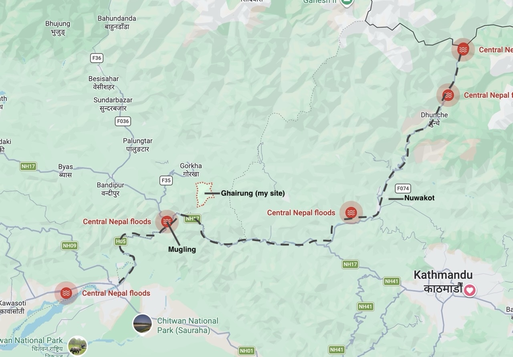
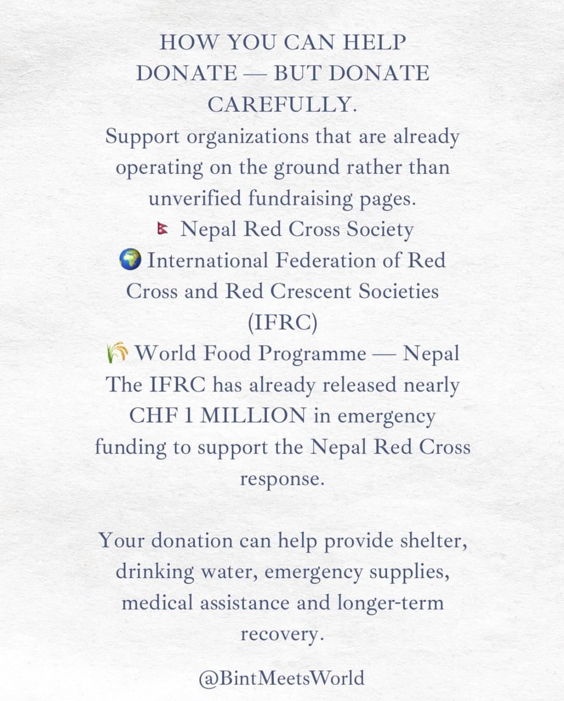

Flooding in Nepal
I just made an entry a few days ago, but I wanted to say something regarding the recent flooding that is happening throughout Central Nepal via the Bhotekoshi and Trishuli rivers.
I’m not really going to be reporting on it in any capacity. There are plenty of news outlets doing an excellent job of that already. If you want more information on it, I would direct you to either BBC News or Al Jazeera . There are also a few Nepali news outlets that report in English, including The Kathmandu Post and The Himalayan Times. I will say, as many of you know, it is quite a tragedy, and has resulted in hundreds of deaths and hundreds more missing in both Nepal and Tibet.
I've also just seen that there is a lot of detailed information on the Wikipedia article for the event. It seems the article title may change (from "2026 Nepal floods" to "2026 China-Nepal floods"), so I apologize if this link stops working. I insist that you do heed the warnings at the top of the article - information is subject to change rapidly, or may be unreliable. 2026 Nepal floods.
As for myself, I am fine. I do appreciate the many folks that have reached out to me about it. I actually happen to be one of the closest volunteers to the flooding, but I am still a good 5 hour walk from the nearest point along the river that is flooding. For reference, here is an annotated screenshot from Google Maps. Naturally, the flooding is more severe upstream, and less severe downstream (near to me). Much of the footage you have seen of houses being swept away and bridges destroyed is in Nuwakot or further North from there.
Map

What I really want to do with this post is connect folks with resources to help if they are so inclined / able to do so. Being a Peace Corps volunteer who is not trained for disaster recovery, we have been directed to not engage directly in relief efforts, but we are encouraged to connect people with resources to assist from home.
If you’re interested in donating to any organization, my recommendation would be the Nepal Red Cross Society. There are other organizations and even an official Nepali Government relief channel, but in terms of transparency and funds actually making it to where they need to go, NRCS seems to have the best track record, given anecdotal evidence from other volunteers. I was also sent the following list of orgs:
Donations

That’s all for this one. If you have any questions, feel free to reach out! I’m always happy to chat about it.